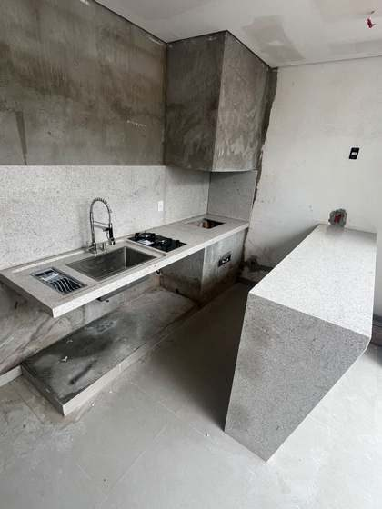

Cozinhas e bancadas
- Bancadas, ilhas e balcões
- Frontão e saia na mesma pedra
- Cubas e acessórios embutidos
- Projeto em 3D e visita técnica
Bancadas de cozinha, banheiros, soleiras e peitoris em granito, mármore, quartzito e ultra compacto. Escolha a pedra, veja como fica na cozinha e peça o orçamento em poucos toques.
A HR Mármores e Granitos é uma marmoraria de Pilão Arcado — BA. Somos uma equipe pequena e dedicada: medimos, cortamos, fazemos o acabamento e acompanhamos cada peça de perto, do primeiro contato até a entrega.
Trabalhamos com projeto em 3D, conferimos tudo de novo antes de começar e seguimos o cronograma pela ordem de serviço. Nas cozinhas, acompanhamos a bancada junto com a marcenaria parceira para tudo se encaixar no lugar.
E você não precisa esperar o horário comercial: a nossa assistente no WhatsApp atende a qualquer hora, tira dúvidas, faz o orçamento de soleiras e peitoris e agenda a visita técnica.
Cada peça é cortada sob medida para o seu espaço.
O valor é da pedra pronta (fabricação e acabamento). Não fazemos a instalação.
Orçar soleira ou peitoril →Toque numa pedra e na cor dos armários para imaginar o resultado. É uma ilustração: a pedra real tem variações naturais, e cada chapa é única.
Responda 3 perguntas rápidas e veja a nossa sugestão. Logo abaixo, compare os tipos de pedra lado a lado.
O mais usado em cozinhas: muito duro, aguenta calor e o uso pesado, com ótimo custo-benefício.
Clássico e elegante, com veios marcantes. Mais macio e sensível a ácidos: ideal para banheiros e lavabos.
Visual de mármore com dureza de pedra resistente. Sofisticado para o dia a dia.
Superfície de última geração com porosidade quase zero: não mancha e é muito fácil de limpar.
30 opções entre granitos, mármores, quartzitos e ultra compactos. Toque numa pedra para ver os detalhes ou testá-la na cozinha. Os cifrões mostram a faixa de preço, do mais em conta ($) ao mais nobre ($$$$).
Nenhuma pedra com esse nome. Pergunte no WhatsApp: conseguimos outras.
É a parte da pedra que fica à mostra. Em soleiras e peitoris você escolhe entre estes (em dourado, as bordas polidas):
Bordas retas, sem polimento. Para quando a pedra fica embutida no piso ou na parede.
Uma borda comprida polida, do lado que fica aparente. O mais comum em soleiras de porta.
As duas bordas compridas polidas, para peças vistas dos dois lados.
Borda cortada em meia-esquadria e colada, com encaixe perfeito e aparência de pedra mais grossa.
Toque em cada etapa para ver o que acontece.
Prazo é compromisso. Cada obra entra no cronograma pela ordem de serviço, e o cronograma é seguido com rigor. Soleiras e peitoris costumam ficar prontos em poucos dias úteis; a data certa vem no orçamento.

Projetos novos, bastidores da fabricação e antes e depois no nosso perfil.
Não achou a sua? Pergunte no WhatsApp: a resposta vem na hora.
Não. Em soleiras e peitoris o valor é da pedra pronta, com fabricação e acabamento. A instalação fica com o seu pedreiro.
Pelo WhatsApp. Para soleiras e peitoris, basta mandar a quantidade, as medidas e o acabamento: o valor vem na hora e o orçamento em PDF logo depois. Para cozinhas e banheiros, marcamos uma visita técnica para medir.
O valor do projeto pode ser dividido em até 10x sem juros no cartão. Pagando à vista, você tem desconto. Também aceitamos Pix e transferência.
Cada obra entra no cronograma pela ordem de serviço. Soleiras e peitoris costumam ficar prontos em poucos dias úteis; cozinhas e banheiros dependem do projeto. A data certa vem escrita no orçamento.
Os ultra compactos e os granitos são os mais resistentes no dia a dia. O mármore é lindo, mas é mais macio e mancha com limão, vinagre e produtos ácidos: vai melhor em banheiros e lavabos.
Limpe com pano úmido e detergente neutro. Evite produtos ácidos, abrasivos e água sanitária pura. Mármores e alguns quartzitos pedem impermeabilização de tempos em tempos; os ultra compactos não precisam.
Atendemos Pilão Arcado e região. Mande a sua cidade no WhatsApp que confirmamos a entrega e a visita técnica.
Sim. Desenhamos a cozinha em 3D para você ver tudo antes do corte, e acompanhamos a bancada junto com a marcenaria parceira até a entrega.
Preencha o que souber. A mensagem fica pronta e você envia pelo WhatsApp com um toque. Nada fica salvo no site.
Do outro lado, a nossa assistente responde na hora, inclusive à noite e no fim de semana.
Nossa assistente atende a qualquer hora: tira dúvidas, faz o orçamento de soleiras e peitoris e agenda a visita técnica. Quando precisar, a equipe assume a conversa.
Chamar no WhatsApp